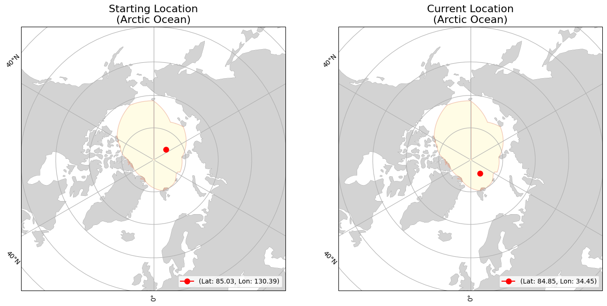

<div><div><b>Buoy Starting and Current Locations</b></div></div>
<div><div><b>Buoy Movement over Time</b></div></div>
<iframe src="300534063056460_movement.html" width="1000" height="1000" style="border:none;"></iframe>
<div>                        <script type="text/javascript">window.PlotlyConfig = {MathJaxConfig: 'local'};</script>
        <script charset="utf-8" src="https://cdn.plot.ly/plotly-2.35.2.min.js"></script>                <div id="3ebf7d62-2ce2-41b2-ac1a-829f6b3972da" class="plotly-graph-div" style="height:600px; width:1000px;"></div>            <script type="text/javascript">                                    window.PLOTLYENV=window.PLOTLYENV || {};                                    if (document.getElementById("3ebf7d62-2ce2-41b2-ac1a-829f6b3972da")) {                    Plotly.newPlot(                        "3ebf7d62-2ce2-41b2-ac1a-829f6b3972da",                        [{"hovertemplate":"Date=%{x}\u003cbr\u003etotal_distance_km=%{y}\u003cextra\u003e\u003c\u002fextra\u003e","legendgroup":"","line":{"color":"#636efa","dash":"solid"},"marker":{"symbol":"circle"},"mode":"lines","name":"","orientation":"v","showlegend":false,"x":["2024-01-01","2024-01-02","2024-01-03","2024-01-04","2024-01-05","2024-01-06","2024-01-07","2024-01-08","2024-01-09","2024-01-10","2024-01-11","2024-01-12","2024-01-13","2024-01-14","2024-01-15","2024-01-16","2024-01-17","2024-01-18","2024-01-19","2024-01-20","2024-01-21","2024-01-22","2024-01-23","2024-01-24","2024-01-25","2024-01-26","2024-01-27","2024-01-28","2024-01-29","2024-01-30","2024-01-31","2024-02-01","2024-02-02","2024-02-03","2024-02-04","2024-02-05","2024-02-06","2024-02-07","2024-02-08","2024-02-09","2024-02-10","2024-02-11","2024-02-12","2024-02-13","2024-02-14","2024-02-15","2024-02-16","2024-02-17","2024-02-18","2024-02-19","2024-02-20","2024-02-21","2024-02-22","2024-02-23","2024-02-24","2024-02-25","2024-02-26","2024-02-27","2024-02-28","2024-02-29","2024-03-01","2024-03-02","2024-03-03","2024-03-04","2024-03-05","2024-03-06","2024-03-07","2024-03-08","2024-03-09","2024-03-10","2024-03-11","2024-03-12","2024-03-13","2024-03-14","2024-03-15","2024-03-16","2024-03-17","2024-03-18","2024-03-19","2024-03-20","2024-03-21","2024-03-22","2024-03-23","2024-03-24","2024-03-25","2024-03-26","2024-03-27","2024-03-28","2024-03-29","2024-03-30","2024-03-31","2024-04-01","2024-04-02","2024-04-03","2024-04-04","2024-04-05","2024-04-06","2024-04-07","2024-04-08","2024-04-09","2024-04-10","2024-04-11","2024-04-12","2024-04-13","2024-04-14","2024-04-15","2024-04-16","2024-04-17","2024-04-18","2024-04-19","2024-04-20","2024-04-21","2024-04-22","2024-04-23","2024-04-24","2024-04-25","2024-04-26","2024-04-27","2024-04-28","2024-04-29","2024-04-30","2024-05-01","2024-05-02","2024-05-03","2024-05-04","2024-05-05","2024-05-06","2024-05-07","2024-05-08","2024-05-09","2024-05-10","2024-05-11","2024-05-12","2024-05-13","2024-05-14","2024-05-15","2024-05-16","2024-05-17","2024-05-18","2024-05-19","2024-05-20","2024-05-21","2024-05-22","2024-05-23","2024-05-24","2024-05-25","2024-05-26","2024-05-27","2024-05-28","2024-05-29","2024-05-30","2024-05-31","2024-06-01","2024-06-02","2024-06-03","2024-06-04","2024-06-05","2024-06-06","2024-06-07","2024-06-08","2024-06-09","2024-06-10","2024-06-11","2024-06-12","2024-06-13","2024-06-14","2024-06-15","2024-06-16","2024-06-17","2024-06-18","2024-06-19","2024-06-20","2024-06-21","2024-06-22","2024-06-23","2024-06-24","2024-06-25","2024-06-26","2024-06-27","2024-06-28","2024-06-29","2024-06-30","2024-07-01","2024-07-02","2024-07-03","2024-07-04","2024-07-05","2024-07-06","2024-07-07","2024-07-08","2024-07-09","2024-07-10","2024-07-11","2024-07-12","2024-07-13","2024-07-14","2024-07-15","2024-07-16","2024-07-17","2024-07-18","2024-07-19","2024-07-20","2024-07-21","2024-07-22","2024-07-23","2024-07-24","2024-07-25","2024-07-26","2024-07-27","2024-07-28"],"xaxis":"x","y":[8.574863956361693,13.450991377291716,16.773742998391437,8.664291294696882,9.945303172763266,9.798837400354131,6.234554473049137,7.099761873248084,8.170468709536403,16.711308857430737,16.58829003384357,15.215469653405494,9.609702702500803,1.970051029053253,9.071432127471725,7.408944188132851,10.562322845935919,8.392891379872628,1.5339050305964188,6.579022307830844,5.86292117166597,3.1743717827341893,6.636582676053059,15.693816378497624,18.334207641631075,24.907931665104183,8.670360165338911,8.207382241200607,15.318312178450553,14.895098562205726,22.423125285786274,19.506776342157035,17.849742228704514,17.08823700952429,12.333074492933424,5.725334333377972,3.585744361270467,3.8838230852746536,3.6234743307202306,6.993267445744514,4.880311035715451,7.78029711309247,9.345902566569851,2.2024434805297677,2.765894657104649,7.077852690682334,11.897345510174357,13.2538446369042,13.002570679547137,7.582224895433775,6.599589354906644,6.421475241234345,5.370350876123224,4.446413982121432,1.0458349667525555,3.717141859912467,9.60282854160992,11.340535474371316,9.214266294325679,6.571313413755689,5.14155198805277,5.527953122839035,7.545521517201001,2.2169675246441365,3.118996794120464,0.9541693333520469,3.435157270031532,2.966442495130437,0.12371014780406847,14.025204253270932,10.33944114871452,4.67635098671256,8.059757821679652,12.139286735937823,13.440716025036965,9.286375214472125,7.5017871329785315,10.1627697563379,9.236687679526286,7.698207288936363,6.227590105690973,13.238480829476954,16.04777112628331,18.73344540427918,12.381635900528519,3.3268625428305785,3.515119191681,9.196091837438752,11.120433747625933,13.196184000228637,7.656460116854141,6.422678784458936,3.606775625111982,7.331747480566663,4.802483593800986,4.574772216231025,3.6475784846842703,3.88441923118776,7.659954513461532,11.317868246964068,10.811254074471746,6.288951978333734,5.974215107054079,5.313947409496523,3.847674828051619,3.6201575660601755,3.8523643481549157,6.552562358509798,7.5528977168441775,5.796747818742335,7.010573438869935,9.185026308383634,6.163503859850157,2.2914108520099017,7.409041752058796,3.7728281316021364,3.789992829071427,12.118666346690352,6.939448803316859,4.208104247698579,4.472422727868205,2.429266478145828,6.128511874925916,8.589729458840583,7.4183371834073,3.3279318875769865,2.7111629966766406,9.935056618255475,9.78382602874777,2.9651783317698617,4.251538164542153,4.402254774003339,3.7953660658900747,3.0308956714719053,3.688417710698304,6.848995374533816,10.458048025020434,5.870059519843241,7.4946031560648825,9.38047164068447,11.129229376233903,11.806075696009115,6.953535106440419,8.863801209347653,15.052023204481525,11.847777622057663,13.87952329204739,6.789875462117847,0.5963741971575417,5.022422315893931,8.493533990607432,6.986153104603393,7.343629092433011,1.6525863083982553,6.228961577009983,9.779274223236413,5.816752932897843,4.925624211238395,7.615270860745416,9.7610937738705,10.065653255861099,12.843523376415442,6.900847106311191,3.8443039690334673,8.449972290002664,5.561979049071057,4.331819775323112,5.985461635400929,9.128689412706299,6.186059299050058,6.454209723018056,4.876302711507231,2.4328616866830526,1.0801443543893072,6.018991396758282,10.431164912638351,5.8853451042660705,1.6120048481616667,4.211852367920488,6.389997729869368,5.143796393852713,1.4490507233992225,4.952953100815674,5.224814887030352,6.094519488938444,5.792318971591973,4.96929891938592,5.6031946301037046,5.894532920877812,13.519605347608953,2.2104305132229074,4.350675533817064,9.442131611479052,5.067533673324883,4.5437574812435955,3.015835563546133,10.760971795806078,12.26589386942753,10.220996019273972,8.546247175315923,9.021240160929143,13.334060423699203,13.839857744360826,8.258408263319637,11.575365498647514,9.450379890661798,7.867610286801347,13.70083163849796,11.025466978971842,1.7090884778361783],"yaxis":"y","type":"scatter"}],                        {"template":{"data":{"histogram2dcontour":[{"type":"histogram2dcontour","colorbar":{"outlinewidth":0,"ticks":""},"colorscale":[[0.0,"#0d0887"],[0.1111111111111111,"#46039f"],[0.2222222222222222,"#7201a8"],[0.3333333333333333,"#9c179e"],[0.4444444444444444,"#bd3786"],[0.5555555555555556,"#d8576b"],[0.6666666666666666,"#ed7953"],[0.7777777777777778,"#fb9f3a"],[0.8888888888888888,"#fdca26"],[1.0,"#f0f921"]]}],"choropleth":[{"type":"choropleth","colorbar":{"outlinewidth":0,"ticks":""}}],"histogram2d":[{"type":"histogram2d","colorbar":{"outlinewidth":0,"ticks":""},"colorscale":[[0.0,"#0d0887"],[0.1111111111111111,"#46039f"],[0.2222222222222222,"#7201a8"],[0.3333333333333333,"#9c179e"],[0.4444444444444444,"#bd3786"],[0.5555555555555556,"#d8576b"],[0.6666666666666666,"#ed7953"],[0.7777777777777778,"#fb9f3a"],[0.8888888888888888,"#fdca26"],[1.0,"#f0f921"]]}],"heatmap":[{"type":"heatmap","colorbar":{"outlinewidth":0,"ticks":""},"colorscale":[[0.0,"#0d0887"],[0.1111111111111111,"#46039f"],[0.2222222222222222,"#7201a8"],[0.3333333333333333,"#9c179e"],[0.4444444444444444,"#bd3786"],[0.5555555555555556,"#d8576b"],[0.6666666666666666,"#ed7953"],[0.7777777777777778,"#fb9f3a"],[0.8888888888888888,"#fdca26"],[1.0,"#f0f921"]]}],"heatmapgl":[{"type":"heatmapgl","colorbar":{"outlinewidth":0,"ticks":""},"colorscale":[[0.0,"#0d0887"],[0.1111111111111111,"#46039f"],[0.2222222222222222,"#7201a8"],[0.3333333333333333,"#9c179e"],[0.4444444444444444,"#bd3786"],[0.5555555555555556,"#d8576b"],[0.6666666666666666,"#ed7953"],[0.7777777777777778,"#fb9f3a"],[0.8888888888888888,"#fdca26"],[1.0,"#f0f921"]]}],"contourcarpet":[{"type":"contourcarpet","colorbar":{"outlinewidth":0,"ticks":""}}],"contour":[{"type":"contour","colorbar":{"outlinewidth":0,"ticks":""},"colorscale":[[0.0,"#0d0887"],[0.1111111111111111,"#46039f"],[0.2222222222222222,"#7201a8"],[0.3333333333333333,"#9c179e"],[0.4444444444444444,"#bd3786"],[0.5555555555555556,"#d8576b"],[0.6666666666666666,"#ed7953"],[0.7777777777777778,"#fb9f3a"],[0.8888888888888888,"#fdca26"],[1.0,"#f0f921"]]}],"surface":[{"type":"surface","colorbar":{"outlinewidth":0,"ticks":""},"colorscale":[[0.0,"#0d0887"],[0.1111111111111111,"#46039f"],[0.2222222222222222,"#7201a8"],[0.3333333333333333,"#9c179e"],[0.4444444444444444,"#bd3786"],[0.5555555555555556,"#d8576b"],[0.6666666666666666,"#ed7953"],[0.7777777777777778,"#fb9f3a"],[0.8888888888888888,"#fdca26"],[1.0,"#f0f921"]]}],"mesh3d":[{"type":"mesh3d","colorbar":{"outlinewidth":0,"ticks":""}}],"scatter":[{"fillpattern":{"fillmode":"overlay","size":10,"solidity":0.2},"type":"scatter"}],"parcoords":[{"type":"parcoords","line":{"colorbar":{"outlinewidth":0,"ticks":""}}}],"scatterpolargl":[{"type":"scatterpolargl","marker":{"colorbar":{"outlinewidth":0,"ticks":""}}}],"bar":[{"error_x":{"color":"#2a3f5f"},"error_y":{"color":"#2a3f5f"},"marker":{"line":{"color":"#E5ECF6","width":0.5},"pattern":{"fillmode":"overlay","size":10,"solidity":0.2}},"type":"bar"}],"scattergeo":[{"type":"scattergeo","marker":{"colorbar":{"outlinewidth":0,"ticks":""}}}],"scatterpolar":[{"type":"scatterpolar","marker":{"colorbar":{"outlinewidth":0,"ticks":""}}}],"histogram":[{"marker":{"pattern":{"fillmode":"overlay","size":10,"solidity":0.2}},"type":"histogram"}],"scattergl":[{"type":"scattergl","marker":{"colorbar":{"outlinewidth":0,"ticks":""}}}],"scatter3d":[{"type":"scatter3d","line":{"colorbar":{"outlinewidth":0,"ticks":""}},"marker":{"colorbar":{"outlinewidth":0,"ticks":""}}}],"scattermapbox":[{"type":"scattermapbox","marker":{"colorbar":{"outlinewidth":0,"ticks":""}}}],"scatterternary":[{"type":"scatterternary","marker":{"colorbar":{"outlinewidth":0,"ticks":""}}}],"scattercarpet":[{"type":"scattercarpet","marker":{"colorbar":{"outlinewidth":0,"ticks":""}}}],"carpet":[{"aaxis":{"endlinecolor":"#2a3f5f","gridcolor":"white","linecolor":"white","minorgridcolor":"white","startlinecolor":"#2a3f5f"},"baxis":{"endlinecolor":"#2a3f5f","gridcolor":"white","linecolor":"white","minorgridcolor":"white","startlinecolor":"#2a3f5f"},"type":"carpet"}],"table":[{"cells":{"fill":{"color":"#EBF0F8"},"line":{"color":"white"}},"header":{"fill":{"color":"#C8D4E3"},"line":{"color":"white"}},"type":"table"}],"barpolar":[{"marker":{"line":{"color":"#E5ECF6","width":0.5},"pattern":{"fillmode":"overlay","size":10,"solidity":0.2}},"type":"barpolar"}],"pie":[{"automargin":true,"type":"pie"}]},"layout":{"autotypenumbers":"strict","colorway":["#636efa","#EF553B","#00cc96","#ab63fa","#FFA15A","#19d3f3","#FF6692","#B6E880","#FF97FF","#FECB52"],"font":{"color":"#2a3f5f"},"hovermode":"closest","hoverlabel":{"align":"left"},"paper_bgcolor":"white","plot_bgcolor":"#E5ECF6","polar":{"bgcolor":"#E5ECF6","angularaxis":{"gridcolor":"white","linecolor":"white","ticks":""},"radialaxis":{"gridcolor":"white","linecolor":"white","ticks":""}},"ternary":{"bgcolor":"#E5ECF6","aaxis":{"gridcolor":"white","linecolor":"white","ticks":""},"baxis":{"gridcolor":"white","linecolor":"white","ticks":""},"caxis":{"gridcolor":"white","linecolor":"white","ticks":""}},"coloraxis":{"colorbar":{"outlinewidth":0,"ticks":""}},"colorscale":{"sequential":[[0.0,"#0d0887"],[0.1111111111111111,"#46039f"],[0.2222222222222222,"#7201a8"],[0.3333333333333333,"#9c179e"],[0.4444444444444444,"#bd3786"],[0.5555555555555556,"#d8576b"],[0.6666666666666666,"#ed7953"],[0.7777777777777778,"#fb9f3a"],[0.8888888888888888,"#fdca26"],[1.0,"#f0f921"]],"sequentialminus":[[0.0,"#0d0887"],[0.1111111111111111,"#46039f"],[0.2222222222222222,"#7201a8"],[0.3333333333333333,"#9c179e"],[0.4444444444444444,"#bd3786"],[0.5555555555555556,"#d8576b"],[0.6666666666666666,"#ed7953"],[0.7777777777777778,"#fb9f3a"],[0.8888888888888888,"#fdca26"],[1.0,"#f0f921"]],"diverging":[[0,"#8e0152"],[0.1,"#c51b7d"],[0.2,"#de77ae"],[0.3,"#f1b6da"],[0.4,"#fde0ef"],[0.5,"#f7f7f7"],[0.6,"#e6f5d0"],[0.7,"#b8e186"],[0.8,"#7fbc41"],[0.9,"#4d9221"],[1,"#276419"]]},"xaxis":{"gridcolor":"white","linecolor":"white","ticks":"","title":{"standoff":15},"zerolinecolor":"white","automargin":true,"zerolinewidth":2},"yaxis":{"gridcolor":"white","linecolor":"white","ticks":"","title":{"standoff":15},"zerolinecolor":"white","automargin":true,"zerolinewidth":2},"scene":{"xaxis":{"backgroundcolor":"#E5ECF6","gridcolor":"white","linecolor":"white","showbackground":true,"ticks":"","zerolinecolor":"white","gridwidth":2},"yaxis":{"backgroundcolor":"#E5ECF6","gridcolor":"white","linecolor":"white","showbackground":true,"ticks":"","zerolinecolor":"white","gridwidth":2},"zaxis":{"backgroundcolor":"#E5ECF6","gridcolor":"white","linecolor":"white","showbackground":true,"ticks":"","zerolinecolor":"white","gridwidth":2}},"shapedefaults":{"line":{"color":"#2a3f5f"}},"annotationdefaults":{"arrowcolor":"#2a3f5f","arrowhead":0,"arrowwidth":1},"geo":{"bgcolor":"white","landcolor":"#E5ECF6","subunitcolor":"white","showland":true,"showlakes":true,"lakecolor":"white"},"title":{"x":0.05},"mapbox":{"style":"light"}}},"xaxis":{"anchor":"y","domain":[0.0,1.0],"title":{"text":"Date"},"tickangle":45},"yaxis":{"anchor":"x","domain":[0.0,1.0],"title":{"text":"total_distance_km"}},"legend":{"tracegroupgap":0},"margin":{"t":60},"title":{"text":"Total Distance Traveled over Time","font":{"size":16},"x":0.5},"height":600,"width":1000},                        {"responsive": true}                    )                };                            </script>        </div>